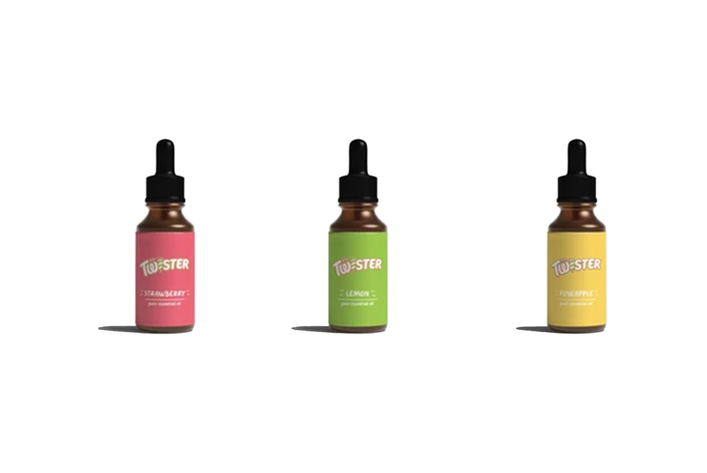
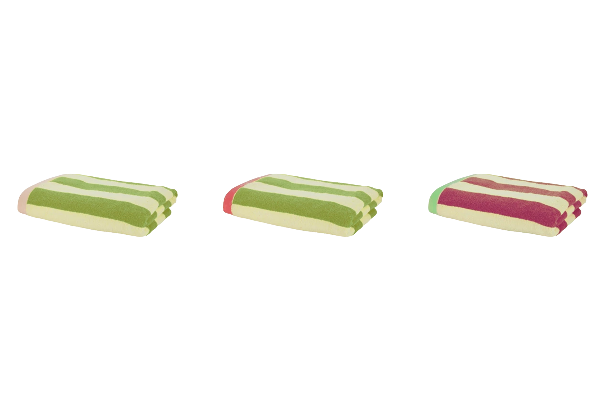

Lavet med:
Caroline Berg Preisler & Laura Høgsbro
Award:
D&AD New Blood
Wooden Pencil
Brief
Gør Twister til et ikon for altid – og ikke kun om sommeren.
Problem
Skandinaver har en større risiko for at få seasonal affective disorder (SAD) / vinterdepression.
Vinterdepression kan skyldes mangel på sollys.
Nogle af de mest almindelige symptomer er: Besvær med at tænke klart, træthed, vægtøgning og angst.
Fakta
I Danmark er der 170 regnvejrsdage om året og i gennemsnit kun 19 sommerdage om året.
1 ud af 10 danskere har symptomer på vinterdepression.
Trend
Saunagus er en hurtigt voksende wellness-trend, som er populær i de skandinaviske lande.
Løsning
Twister Saunagus:
Twister bringer sommerens varme ind i den koldeste og mørkeste tid på året.
Kampagnevideo
Step 1
1. februar
Kampagnestart. På årets mest sandsynligt kolde dag uddeler Twister is.
Twistet er, at isen leder videre til en landingpage.

Step 2
Landingpage
Her kan deltagerne booke en session.

Step 3
14.–31. februar
Kampagnens hovedevent: Saunagus-session.
Deltagerne prøver Twister-saunaen.

Elements
Saunaen set i 180°

Æteriske olier

Håndklæder

Isbillet